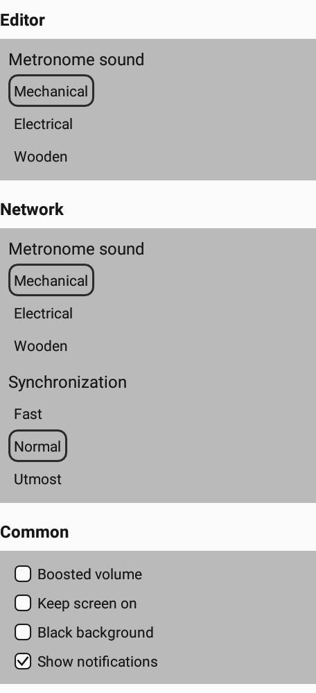

There are editor settings, network settings and general settings. The editor settings are also directly accessible in the editor, as are the network settings directly accessible when the joint is establishing.
